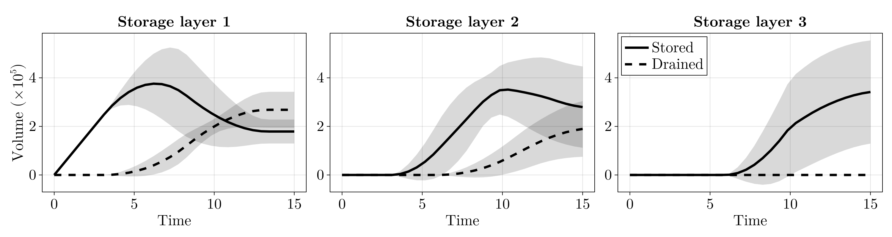

Multi-layer ensemble
This example demonstrates how the speed of CO2BatchFill enables large ensembles of multi-layer simulations. We use the same setup as in the multi-layer filling example. However, instead of a single run, we generate an ensemble of 100 simulations where the CAPILLARY_ENTRY_PRESSURE is varied.
Setup
This is essentially the same as in the multi-layer filling example, so we won't go into as much detail here.
using CO2BatchFill
using SurfaceWaterIntegratedModeling
using GaussianRandomFields # for generating synthetic surfaces
using CairoMakie # for visualization
using LaTeXStrings
using RandomPhysical properties and domain setup
const N_LAYERS = 3
const NX, NY = 100, 100
const LENGTH_X = 1000.0
const LENGTH_Y = 1000.0
const DX, DY = LENGTH_X / NX, LENGTH_Y / NY
const LAYER_THICK = 10.0 # m (vertical thickness of each sand layer)
const RESIDUAL_TRAPPING = 0.4 # fraction of CO2 volume that becomes immobile when a layer fills
const boundary_condition = :closed:closedSet up the properties for the caproch layer
rp_caprock = ReservoirProperties(0.3, RESIDUAL_TRAPPING, 0.1, Inf, 5.0) # Infinite entry pressure for caprock layerReservoirProperties(0.3, 0.4, 0.1, Inf, Inf, 5.0, 1020.0, 460.0)Generating synthetic topography
Random.seed!(101) # for reproducibility
cov = CovarianceFunction(2, Matern(200, 2, σ=3.0))
pts = range(0.0, stop=(NX - 1) * DX, step=DX)
function sample_surface(base_depth)
sample(GaussianRandomField(cov, CirculantEmbedding(), pts, pts, minpadding=113)) .+ base_depth
end
surf_L1 = sample_surface(950.0) # deepest (injection layer)
surf_L2 = sample_surface(900.0)
surf_L3 = sample_surface(850.0)100×100 Matrix{Float64}:
854.196 854.193 854.189 854.181 … 852.165 852.124 852.09 852.096
854.193 854.187 854.181 854.172 852.165 852.128 852.098 852.099
854.204 854.195 854.184 854.177 852.19 852.16 852.142 852.14
854.193 854.188 854.178 854.169 852.22 852.206 852.192 852.19
854.187 854.183 854.17 854.16 852.253 852.243 852.238 852.25
854.191 854.187 854.171 854.15 … 852.292 852.283 852.279 852.299
854.179 854.171 854.157 854.136 852.321 852.313 852.312 852.324
854.14 854.128 854.121 854.106 852.323 852.32 852.326 852.347
854.088 854.067 854.065 854.052 852.318 852.318 852.328 852.364
853.994 853.978 853.978 853.966 852.303 852.297 852.308 852.351
⋮ ⋱
852.563 852.667 852.777 852.88 845.46 845.423 845.413 845.445
852.507 852.594 852.686 852.78 845.599 845.56 845.552 845.576
852.435 852.515 852.595 852.675 845.754 845.712 845.704 845.729
852.358 852.429 852.494 852.558 845.917 845.879 845.869 845.89
852.296 852.354 852.406 852.46 … 846.095 846.058 846.037 846.045
852.245 852.296 852.339 852.388 846.273 846.233 846.2 846.196
852.191 852.235 852.276 852.323 846.427 846.38 846.335 846.328
852.13 852.176 852.214 852.26 846.564 846.509 846.461 846.445
852.066 852.117 852.157 852.21 846.669 846.617 846.571 846.551Setting up and analyzing the layers
sand_layers = [
Dict{String,Any}("name" => "Storage layer 3", "top" => surf_L3, "base" => surf_L3 .+ LAYER_THICK),
Dict{String,Any}("name" => "Storage layer 2", "top" => surf_L2, "base" => surf_L2 .+ LAYER_THICK),
Dict{String,Any}("name" => "Storage layer 1", "top" => surf_L1, "base" => surf_L1 .+ LAYER_THICK),
]
topo = GenericTopography(sand_layers, NX, NY, DX, DY, minimum(surf_L3), maximum(surf_L1) + LAYER_THICK)
domain = create_domain(topo, 0.1)
layers = analyze_base_surfaces(topo; boundary_condition=boundary_condition)3-element Vector{Layer}:
Layer("Storage layer 1", SurfaceWaterIntegratedModeling.TrapStructure{Float64}([1.0009540081757891e6 1.0009540081757891e6 … 1.0009540081757891e6 1.0009540081757891e6; 1.0009540081757891e6 1.0009540081757891e6 … 1.0009540081757891e6 1.0009540081757891e6; … ; 1.0009540081757891e6 1.0009540081757891e6 … 1.0009540081757891e6 1.0009540081757891e6; 1.0009540081757891e6 1.0009540081757891e6 … 1.0009540081757891e6 1.0009540081757891e6], Int8[-1 -1 … -1 -1; -1 5 … 6 -1; … ; -1 7 … 4 -1; -1 -1 … -1 -1], [-1 -1 … -1 -1; -1 1 … 20 -1; … ; -1 6 … 19 -1; -1 -1 … -1 -1], SurfaceWaterIntegratedModeling.Spillpoint[SurfaceWaterIntegratedModeling.Spillpoint(11, 2314, 2315, 948.61688157825), SurfaceWaterIntegratedModeling.Spillpoint(3, 259, 364, 948.0833149777059), SurfaceWaterIntegratedModeling.Spillpoint(2, 364, 259, 948.0833149777059), SurfaceWaterIntegratedModeling.Spillpoint(3, 268, 267, 948.1488181869026), SurfaceWaterIntegratedModeling.Spillpoint(4, 276, 275, 948.2343540449758), SurfaceWaterIntegratedModeling.Spillpoint(5, 299, 298, 948.6545062377003), SurfaceWaterIntegratedModeling.Spillpoint(14, 6216, 6319, 946.6209775294197), SurfaceWaterIntegratedModeling.Spillpoint(7, 1629, 1630, 948.3858645247806), SurfaceWaterIntegratedModeling.Spillpoint(8, 1732, 1733, 948.3951046095868), SurfaceWaterIntegratedModeling.Spillpoint(11, 1802, 1905, 948.4411246660081) … SurfaceWaterIntegratedModeling.Spillpoint(9, 1733, 1732, 948.3951046095868), SurfaceWaterIntegratedModeling.Spillpoint(12, 2245, 2348, 948.4548121584705), SurfaceWaterIntegratedModeling.Spillpoint(3, 2037, 1932, 948.4753156898411), SurfaceWaterIntegratedModeling.Spillpoint(10, 1597, 1700, 948.4807796345932), SurfaceWaterIntegratedModeling.Spillpoint(1, 2315, 2314, 948.61688157825), SurfaceWaterIntegratedModeling.Spillpoint(6, 298, 299, 948.6545062377003), SurfaceWaterIntegratedModeling.Spillpoint(17, 5937, 6042, 948.7634268874292), SurfaceWaterIntegratedModeling.Spillpoint(16, 6575, 6576, 948.9625810471122), SurfaceWaterIntegratedModeling.Spillpoint(20, 10091, 10195, 953.2512867847769), SurfaceWaterIntegratedModeling.Spillpoint(-1, 10194, 10193, 1.0009540081757891e6)], [256.95480683884614, 0.8730959451385161, 0.10624745742973118, 0.0007655844998453176, 1.948280289273157, 0.391699177245755, 124.25270641804968, 0.0019724887349639175, 0.0179817226336354, 0.00351183040459091 … 5961.573260477031, 6201.747606368586, 6286.374060666594, 6397.090202431, 7070.53848753061, 7542.898119370661, 8199.456667682076, 9528.059550076847, 48294.36104040092, 1.0000055765947332e10], [0.0, 0.0, 0.0, 0.0, 0.0, 0.0, 0.0, 0.0, 0.0, 0.0 … 5925.327338859373, 5961.5912421996645, 6201.747969995828, 6371.840893405661, 6398.240729318823, 7327.493294369456, 7543.289818547907, 8199.609162976574, 9528.060414858759, 48294.503831268914], [[1355, 1459, 1460, 1461, 1563, 1564, 1565, 1566, 1667, 1668 … 5311, 5312, 5313, 5314, 5411, 5412, 5413, 5414, 5415, 5416], [252, 253, 254, 255, 256, 257, 258, 259, 357, 358, 359, 360, 361, 362, 461, 462, 463, 464, 465], [261, 262, 364, 365, 366, 367, 469, 470, 471], [268], [276, 277, 278, 279, 280, 281, 282, 283, 284, 285, 286, 383, 384, 385, 386, 387, 388, 489], [299, 300, 301, 302, 303, 304, 305, 306, 307], [3207, 3309, 3310, 3311, 3312, 3413, 3414, 3415, 3416, 3417 … 6013, 6014, 6015, 6016, 6110, 6111, 6112, 6113, 6114, 6216], [1629], [1730, 1731, 1732, 1834], [1802] … [1534, 1629, 1630, 1631, 1632, 1633, 1634, 1635, 1636, 1637 … 10583, 10584, 10585, 10586, 10587, 10588, 10589, 10590, 10591, 10592], [1421, 1422, 1423, 1424, 1425, 1522, 1523, 1524, 1525, 1526 … 10584, 10585, 10586, 10587, 10588, 10589, 10590, 10591, 10592, 10593], [1318, 1319, 1420, 1421, 1422, 1423, 1424, 1425, 1426, 1521 … 10584, 10585, 10586, 10587, 10588, 10589, 10590, 10591, 10592, 10593], [238, 239, 240, 241, 242, 243, 244, 245, 246, 247 … 10584, 10585, 10586, 10587, 10588, 10589, 10590, 10591, 10592, 10593], [236, 237, 238, 239, 240, 241, 242, 243, 244, 245 … 10585, 10586, 10587, 10588, 10589, 10590, 10591, 10592, 10593, 10594], [235, 236, 237, 238, 239, 240, 241, 242, 243, 244 … 10585, 10586, 10587, 10588, 10589, 10590, 10591, 10592, 10593, 10594], [233, 234, 235, 236, 237, 238, 239, 240, 241, 242 … 10586, 10587, 10588, 10589, 10590, 10591, 10592, 10593, 10594, 10595], [230, 231, 232, 233, 234, 235, 236, 237, 238, 239 … 10587, 10588, 10589, 10590, 10591, 10592, 10593, 10594, 10595, 10596], [211, 212, 213, 214, 215, 216, 217, 218, 219, 220 … 10597, 10598, 10599, 10600, 10601, 10602, 10603, 10604, 10605, 10606], [106, 107, 108, 109, 110, 111, 112, 113, 114, 115 … 10702, 10703, 10704, 10705, 10706, 10707, 10708, 10709, 10710, 10711]], [[1], [2], [3], [4], [5], [6], [7], [8], [9], [10] … [13, 14, 19, 18, 7, 8], [13, 14, 19, 18, 7, 8, 9], [12, 13, 14, 19, 18, 7, 8, 9], [12, 13, 14, 19, 18, 7, 8, 9, 4, 2, 3, 5], [12, 13, 14, 19, 18, 7, 8, 9, 4, 2, 3, 5, 11, 10], [12, 13, 14, 19, 18, 7, 8, 9, 4, 2, 3, 5, 11, 10, 1], [12, 13, 14, 19, 18, 7, 8, 9, 4, 2, 3, 5, 11, 10, 1, 6], [12, 13, 14, 19, 18, 7, 8, 9, 4, 2, 3, 5, 11, 10, 1, 6, 15, 17], [12, 13, 14, 19, 18, 7, 8, 9, 4, 2, 3, 5, 11, 10, 1, 6, 15, 17, 16], [20, 12, 13, 14, 19, 18, 7, 8, 9, 4, 2, 3, 5, 11, 10, 1, 6, 15, 17, 16]], [[1, 35, 36, 37, 38, 39], [2, 22, 25, 27, 33, 34, 35, 36, 37, 38, 39], [3, 22, 25, 27, 33, 34, 35, 36, 37, 38, 39], [4, 25, 27, 33, 34, 35, 36, 37, 38, 39], [5, 27, 33, 34, 35, 36, 37, 38, 39], [6, 36, 37, 38, 39], [7, 28, 29, 30, 31, 32, 33, 34, 35, 36, 37, 38, 39], [8, 30, 31, 32, 33, 34, 35, 36, 37, 38, 39], [9, 31, 32, 33, 34, 35, 36, 37, 38, 39], [10, 21, 34, 35, 36, 37, 38, 39], [11, 21, 34, 35, 36, 37, 38, 39], [12, 32, 33, 34, 35, 36, 37, 38, 39], [13, 29, 30, 31, 32, 33, 34, 35, 36, 37, 38, 39], [14, 23, 26, 28, 29, 30, 31, 32, 33, 34, 35, 36, 37, 38, 39], [15, 24, 37, 38, 39], [16, 38, 39], [17, 24, 37, 38, 39], [18, 26, 28, 29, 30, 31, 32, 33, 34, 35, 36, 37, 38, 39], [19, 23, 26, 28, 29, 30, 31, 32, 33, 34, 35, 36, 37, 38, 39], [20, 39]], Graphs.SimpleGraphs.SimpleDiGraph{Int64}(38, [[35], [22], [22], [25], [27], [36], [28], [30], [31], [21] … [31], [32], [33], [34], [35], [36], [37], [38], [39], Int64[]], [Int64[], Int64[], Int64[], Int64[], Int64[], Int64[], Int64[], Int64[], Int64[], Int64[] … [8, 29], [9, 30], [12, 31], [27, 32], [21, 33], [1, 34], [6, 35], [24, 36], [16, 37], [20, 38]]), nothing, nothing), :closed)
Layer("Storage layer 2", SurfaceWaterIntegratedModeling.TrapStructure{Float64}([1.0009005993834592e6 1.0009005993834592e6 … 1.0009005993834592e6 1.0009005993834592e6; 1.0009005993834592e6 1.0009005993834592e6 … 1.0009005993834592e6 1.0009005993834592e6; … ; 1.0009005993834592e6 1.0009005993834592e6 … 1.0009005993834592e6 1.0009005993834592e6; 1.0009005993834592e6 1.0009005993834592e6 … 1.0009005993834592e6 1.0009005993834592e6], Int8[-1 -1 … -1 -1; -1 5 … 6 -1; … ; -1 7 … 4 -1; -1 -1 … -1 -1], [-1 -1 … -1 -1; -1 1 … 9 -1; … ; -1 7 … 14 -1; -1 -1 … -1 -1], SurfaceWaterIntegratedModeling.Spillpoint[SurfaceWaterIntegratedModeling.Spillpoint(2, 223, 224, 898.0800647504965), SurfaceWaterIntegratedModeling.Spillpoint(3, 227, 228, 898.0704507297149), SurfaceWaterIntegratedModeling.Spillpoint(2, 228, 227, 898.0704507297149), SurfaceWaterIntegratedModeling.Spillpoint(5, 361, 465, 898.0802750098318), SurfaceWaterIntegratedModeling.Spillpoint(8, 3067, 3172, 896.3505811389219), SurfaceWaterIntegratedModeling.Spillpoint(5, 263, 366, 898.1592927636975), SurfaceWaterIntegratedModeling.Spillpoint(8, 2493, 2596, 894.0635892423759), SurfaceWaterIntegratedModeling.Spillpoint(7, 2596, 2493, 894.0635892423759), SurfaceWaterIntegratedModeling.Spillpoint(13, 9705, 9706, 893.9217892309659), SurfaceWaterIntegratedModeling.Spillpoint(13, 8678, 8782, 894.5054219026332) … SurfaceWaterIntegratedModeling.Spillpoint(12, 8512, 8409, 894.3657536531434), SurfaceWaterIntegratedModeling.Spillpoint(11, 8409, 8512, 894.3657536531434), SurfaceWaterIntegratedModeling.Spillpoint(4, 239, 240, 898.509325077464), SurfaceWaterIntegratedModeling.Spillpoint(13, 9623, 9726, 894.3702053752692), SurfaceWaterIntegratedModeling.Spillpoint(10, 8782, 8678, 894.5054219026332), SurfaceWaterIntegratedModeling.Spillpoint(5, 3172, 3067, 896.3505811389219), SurfaceWaterIntegratedModeling.Spillpoint(4, 465, 361, 898.0802750098318), SurfaceWaterIntegratedModeling.Spillpoint(6, 366, 263, 898.1592927636975), SurfaceWaterIntegratedModeling.Spillpoint(3, 240, 239, 898.509325077464), SurfaceWaterIntegratedModeling.Spillpoint(-1, 159, 55, 1.0009005993834592e6)], [9.025198480433232, 0.00410135299466674, 0.10573344850638478, 0.11110894992964404, 0.013492592282887017, 0.0012783896705741427, 67.2710762352275, 500.5878321522641, 56.78757500423876, 0.3173891125793489 … 311.2494978152606, 952.2028294877161, 36.776049819406694, 1273.6743460170692, 2061.65011465223, 11652.967116468773, 24415.186439760233, 25087.354808712294, 28152.621589594284, 1.0000048211392612e10], [0.0, 0.0, 0.0, 0.0, 0.0, 0.0, 0.0, 0.0, 0.0, 0.0 … 72.81407345207981, 783.1322328802289, 9.209607146571784, 1263.4523273029768, 1604.7532310159422, 2061.9675037648094, 11652.980609061056, 24415.29754871016, 25087.356087101965, 28189.39763941369], [[211, 212, 213, 214, 215, 216, 217, 218, 219, 220 … 420, 421, 422, 423, 424, 523, 524, 525, 526, 627], [226, 227], [228, 229, 230, 231, 232], [253, 254, 255, 256, 257, 361], [2963, 3067], [263], [304, 305, 306, 307, 308, 309, 310, 407, 408, 409 … 2284, 2285, 2286, 2385, 2386, 2387, 2388, 2389, 2390, 2493], [2592, 2593, 2594, 2595, 2596, 2695, 2696, 2697, 2698, 2699 … 6955, 6956, 6957, 6958, 6959, 7059, 7060, 7061, 7062, 7063], [8329, 8330, 8331, 8332, 8333, 8334, 8335, 8432, 8433, 8434 … 9909, 9910, 10005, 10006, 10007, 10008, 10009, 10010, 10011, 10113], [8264, 8265, 8266, 8367, 8368, 8369, 8370, 8470, 8471, 8472, 8473, 8474, 8574, 8575, 8576, 8577, 8578, 8678, 8681] … [8079, 8080, 8081, 8082, 8180, 8181, 8182, 8183, 8184, 8185 … 10597, 10598, 10599, 10600, 10601, 10602, 10603, 10604, 10605, 10606], [302, 303, 304, 305, 306, 307, 308, 309, 310, 405 … 8304, 8305, 8306, 8307, 8308, 8309, 8409, 8410, 8411, 8412], [211, 212, 213, 214, 215, 216, 217, 218, 219, 220 … 627, 628, 629, 630, 631, 632, 731, 732, 733, 734], [302, 303, 304, 305, 306, 307, 308, 309, 310, 405 … 10597, 10598, 10599, 10600, 10601, 10602, 10603, 10604, 10605, 10606], [301, 302, 303, 304, 305, 306, 307, 308, 309, 310 … 10597, 10598, 10599, 10600, 10601, 10602, 10603, 10604, 10605, 10606], [292, 293, 294, 295, 296, 297, 298, 299, 300, 301 … 10597, 10598, 10599, 10600, 10601, 10602, 10603, 10604, 10605, 10606], [278, 279, 280, 281, 282, 283, 284, 285, 286, 287 … 10597, 10598, 10599, 10600, 10601, 10602, 10603, 10604, 10605, 10606], [250, 251, 252, 253, 254, 255, 256, 257, 258, 259 … 10597, 10598, 10599, 10600, 10601, 10602, 10603, 10604, 10605, 10606], [240, 241, 242, 243, 244, 245, 246, 247, 248, 249 … 10597, 10598, 10599, 10600, 10601, 10602, 10603, 10604, 10605, 10606], [106, 107, 108, 109, 110, 111, 112, 113, 114, 115 … 10702, 10703, 10704, 10705, 10706, 10707, 10708, 10709, 10710, 10711]], [[1], [2], [3], [4], [5], [6], [7], [8], [9], [10] … [11, 14], [12, 8, 7], [2, 3, 1], [11, 14, 12, 8, 7], [9, 13, 11, 14, 12, 8, 7], [9, 13, 11, 14, 12, 8, 7, 10], [5, 9, 13, 11, 14, 12, 8, 7, 10], [5, 9, 13, 11, 14, 12, 8, 7, 10, 4], [6, 5, 9, 13, 11, 14, 12, 8, 7, 10, 4], [6, 5, 9, 13, 11, 14, 12, 8, 7, 10, 4, 2, 3, 1]], [[1, 20, 27], [2, 15, 20, 27], [3, 15, 20, 27], [4, 25, 26, 27], [5, 24, 25, 26, 27], [6, 26, 27], [7, 16, 19, 21, 22, 23, 24, 25, 26, 27], [8, 16, 19, 21, 22, 23, 24, 25, 26, 27], [9, 17, 22, 23, 24, 25, 26, 27], [10, 23, 24, 25, 26, 27], [11, 18, 21, 22, 23, 24, 25, 26, 27], [12, 19, 21, 22, 23, 24, 25, 26, 27], [13, 17, 22, 23, 24, 25, 26, 27], [14, 18, 21, 22, 23, 24, 25, 26, 27]], Graphs.SimpleGraphs.SimpleDiGraph{Int64}(26, [[20], [15], [15], [25], [24], [26], [16], [16], [17], [23] … [21], [21], [27], [22], [23], [24], [25], [26], [27], Int64[]], [Int64[], Int64[], Int64[], Int64[], Int64[], Int64[], Int64[], Int64[], Int64[], Int64[] … [11, 14], [12, 16], [1, 15], [18, 19], [17, 21], [10, 22], [5, 23], [4, 24], [6, 25], [20, 26]]), nothing, nothing), :closed)
Layer("Storage layer 3", SurfaceWaterIntegratedModeling.TrapStructure{Float64}([1.0008542036720291e6 1.0008542036720291e6 … 1.0008542036720291e6 1.0008542036720291e6; 1.0008542036720291e6 1.0008542036720291e6 … 1.0008542036720291e6 1.0008542036720291e6; … ; 1.0008542036720291e6 1.0008542036720291e6 … 1.0008542036720291e6 1.0008542036720291e6; 1.0008542036720291e6 1.0008542036720291e6 … 1.0008542036720291e6 1.0008542036720291e6], Int8[-1 -1 … -1 -1; -1 5 … 6 -1; … ; -1 7 … 4 -1; -1 -1 … -1 -1], [-1 -1 … -1 -1; -1 1 … 9 -1; … ; -1 3 … 5 -1; -1 -1 … -1 -1], SurfaceWaterIntegratedModeling.Spillpoint[SurfaceWaterIntegratedModeling.Spillpoint(4, 4891, 4995, 850.8847147411016), SurfaceWaterIntegratedModeling.Spillpoint(5, 6823, 6928, 848.3565110102334), SurfaceWaterIntegratedModeling.Spillpoint(2, 1038, 1142, 852.2795100758497), SurfaceWaterIntegratedModeling.Spillpoint(1, 4995, 4891, 850.8847147411016), SurfaceWaterIntegratedModeling.Spillpoint(2, 6928, 6823, 848.3565110102334), SurfaceWaterIntegratedModeling.Spillpoint(4, 6971, 6867, 851.3094788923312), SurfaceWaterIntegratedModeling.Spillpoint(2, 8441, 8442, 851.8177244014737), SurfaceWaterIntegratedModeling.Spillpoint(7, 8649, 8545, 851.8289555340883), SurfaceWaterIntegratedModeling.Spillpoint(5, 10306, 10307, 852.3203070632159), SurfaceWaterIntegratedModeling.Spillpoint(6, 6867, 6971, 851.3094788923312), SurfaceWaterIntegratedModeling.Spillpoint(7, 8442, 8441, 851.8177244014737), SurfaceWaterIntegratedModeling.Spillpoint(2, 7813, 7814, 851.8328950497228), SurfaceWaterIntegratedModeling.Spillpoint(8, 8545, 8649, 851.8289555340883), SurfaceWaterIntegratedModeling.Spillpoint(6, 7814, 7813, 851.8328950497228), SurfaceWaterIntegratedModeling.Spillpoint(3, 1142, 1038, 852.2795100758497), SurfaceWaterIntegratedModeling.Spillpoint(9, 10307, 10306, 852.3203070632159), SurfaceWaterIntegratedModeling.Spillpoint(-1, 9466, 9465, 1.0008542036720291e6)], [0.8178101938829059, 719.0314328929026, 1.1417949895085258, 0.4886890792656686, 2213.7014619936826, 4.550797250195274, 0.0006014307871282654, 0.0023552313367645183, 3.821496414553394, 28.489755547608297, 18170.760727666813, 172.5000066888491, 18252.15657412538, 18280.777063302572, 22176.968428333406, 22539.86127372098, 1.000004057518819e10], [0.0, 0.0, 0.0, 0.0, 0.0, 0.0, 0.0, 0.0, 0.0, 1.3064992731485745, 2932.732894886585, 33.04055279780357, 18170.7613290976, 18252.158929356716, 18453.27706999142, 22178.110223322914, 22543.682770135532], [[3851, 3955, 3956, 4059, 4060, 4163, 4164, 4267, 4268, 4371, 4372, 4475, 4579, 4683, 4787, 4891], [2646, 2647, 2648, 2649, 2650, 2651, 2748, 2749, 2750, 2751 … 6615, 6616, 6714, 6715, 6716, 6717, 6718, 6719, 6822, 6823], [307, 308, 309, 310, 412, 413, 414, 516, 517, 518, 621, 622, 726, 830, 934, 1038], [4995, 5099, 5203, 5307, 5411, 5515, 5619, 5723, 5827], [6928, 7033, 7136, 7137, 7138, 7139, 7140, 7141, 7240, 7241 … 10597, 10598, 10599, 10600, 10601, 10602, 10603, 10604, 10605, 10606], [6971, 7075, 7179, 7180, 7283, 7284, 7387, 7388, 7389, 7491 … 7804, 7805, 7806, 7907, 7908, 7909, 7910, 8011, 8012, 8013], [8441], [8649], [9886, 9987, 9988, 9989, 9990, 9991, 9992, 10091, 10092, 10093 … 10406, 10407, 10408, 10409, 10507, 10508, 10509, 10510, 10511, 10512], [3435, 3436, 3539, 3540, 3541, 3542, 3643, 3644, 3645, 3646 … 6140, 6243, 6244, 6347, 6348, 6451, 6555, 6659, 6763, 6867], [760, 761, 762, 763, 764, 765, 766, 767, 768, 861 … 10597, 10598, 10599, 10600, 10601, 10602, 10603, 10604, 10605, 10606], [2815, 2816, 2915, 2916, 2917, 2918, 2919, 2920, 2921, 3019 … 8427, 8428, 8429, 8430, 8431, 8432, 8433, 8434, 8435, 8436], [759, 760, 761, 762, 763, 764, 765, 766, 767, 768 … 10597, 10598, 10599, 10600, 10601, 10602, 10603, 10604, 10605, 10606], [759, 760, 761, 762, 763, 764, 765, 766, 767, 768 … 10597, 10598, 10599, 10600, 10601, 10602, 10603, 10604, 10605, 10606], [237, 238, 239, 240, 241, 242, 339, 340, 341, 342 … 10597, 10598, 10599, 10600, 10601, 10602, 10603, 10604, 10605, 10606], [236, 237, 238, 239, 240, 241, 242, 243, 306, 307 … 10597, 10598, 10599, 10600, 10601, 10602, 10603, 10604, 10605, 10606], [106, 107, 108, 109, 110, 111, 112, 113, 114, 115 … 10702, 10703, 10704, 10705, 10706, 10707, 10708, 10709, 10710, 10711]], [[1], [2], [3], [4], [5], [6], [7], [8], [9], [1, 4], [2, 5], [6, 1, 4], [7, 2, 5], [7, 2, 5, 8], [7, 2, 5, 8, 6, 1, 4], [3, 7, 2, 5, 8, 6, 1, 4], [9, 3, 7, 2, 5, 8, 6, 1, 4]], [[1, 10, 12, 15, 16, 17], [2, 11, 13, 14, 15, 16, 17], [3, 16, 17], [4, 10, 12, 15, 16, 17], [5, 11, 13, 14, 15, 16, 17], [6, 12, 15, 16, 17], [7, 13, 14, 15, 16, 17], [8, 14, 15, 16, 17], [9, 17]], Graphs.SimpleGraphs.SimpleDiGraph{Int64}(16, [[10], [11], [16], [10], [11], [12], [13], [14], [17], [12], [13], [15], [14], [15], [16], [17], Int64[]], [Int64[], Int64[], Int64[], Int64[], Int64[], Int64[], Int64[], Int64[], Int64[], [1, 4], [2, 5], [6, 10], [7, 11], [8, 13], [12, 14], [3, 15], [9, 16]]), nothing, nothing), :closed)Defining injection schedule
TOTAL_RATE = 80_000.0
INJECTION_END = 10.0 # injection up to 10 years, then stop
rate_L1 = create_injection_rate(layers, (div(NX, 2), div(NY, 2)), TOTAL_RATE)
null_rate = create_no_injection(layers)1-element Vector{InjectionEvent}:
InjectionEvent(0.0, [0.0 0.0 … 0.0 0.0; 0.0 0.0 … 0.0 0.0; … ; 0.0 0.0 … 0.0 0.0; 0.0 0.0 … 0.0 0.0])Creating an injection_events vector with one entry per layer, where each entry is a vector of InjectionEvents.
injection_events = [
[InjectionEvent(0.0, rate_L1), InjectionEvent(INJECTION_END, create_injection_rate(layers, (1, 1), 0.0))], # Layer 1
null_rate, # Layer 2
null_rate, # Layer 3
]3-element Vector{Vector{InjectionEvent}}:
[InjectionEvent(0.0, [0.0 0.0 … 0.0 0.0; 0.0 0.0 … 0.0 0.0; … ; 0.0 0.0 … 0.0 0.0; 0.0 0.0 … 0.0 0.0]), InjectionEvent(10.0, [0.0 0.0 … 0.0 0.0; 0.0 0.0 … 0.0 0.0; … ; 0.0 0.0 … 0.0 0.0; 0.0 0.0 … 0.0 0.0])]
[InjectionEvent(0.0, [0.0 0.0 … 0.0 0.0; 0.0 0.0 … 0.0 0.0; … ; 0.0 0.0 … 0.0 0.0; 0.0 0.0 … 0.0 0.0])]
[InjectionEvent(0.0, [0.0 0.0 … 0.0 0.0; 0.0 0.0 … 0.0 0.0; … ; 0.0 0.0 … 0.0 0.0; 0.0 0.0 … 0.0 0.0])]Setting up and running ensemble
We create an ensemble of 100 simulations where the CAPILLARY_ENTRY_PRESSURE is varied between $20$ and $30$ kPa
N_ENSEMBLE = 100
capillary_entry_pressures = range(20_000.0, stop=30_000.0, length=N_ENSEMBLE)
println("Min meakage height threshold: $(round(ReservoirProperties(0.3, RESIDUAL_TRAPPING, 0.1, minimum(capillary_entry_pressures), 5.0).leakage_height, digits=2))")
println("Max meakage height threshold: $(round(ReservoirProperties(0.3, RESIDUAL_TRAPPING, 0.1, maximum(capillary_entry_pressures), 5.0).leakage_height, digits=2))")Min meakage height threshold: 3.64
Max meakage height threshold: 5.46Empty vectors to store snapshots for each ensemble member
t_end = 15.0
timepoints = collect(range(0.0, stop=t_end, length=30))
multi_snaps_ensemble_final = Vector{MultiLayerSnapshot}(undef, N_ENSEMBLE)
multi_snaps_ensemble_ts = Vector{Vector{MultiLayerSnapshot}}(undef, N_ENSEMBLE)100-element Vector{Vector{MultiLayerSnapshot}}:
#undef
#undef
#undef
#undef
#undef
#undef
#undef
#undef
#undef
#undef
⋮
#undef
#undef
#undef
#undef
#undef
#undef
#undef
#undef
#undefThe @time macro is used to measure the total time taken for the ensemble simulations.
@time for i in 1:N_ENSEMBLE
# Creating temporary ReservoirProperties struct
rp = ReservoirProperties(0.3, RESIDUAL_TRAPPING, 0.1, capillary_entry_pressures[i], 5.0)
# Running simulation
seqs, leakage_states, weather_events_per_layer = fill_layers(
layers, domain, [rp, rp, rp_caprock], injection_events; verbose=false)
# Generate snapshots for this ensemble member
multi_snaps = generate_multi_layer_snapshots(
layers, seqs, leakage_states, weather_events_per_layer, timepoints)
# Store the final snapshot and the full timeseries of snapshots for this ensemble member
multi_snaps_ensemble_final[i] = multi_snaps[end]
multi_snaps_ensemble_ts[i] = multi_snaps
end 28.040641 seconds (299.32 M allocations: 27.421 GiB, 27.12% gc time, 25.39% compilation time)Visualization
Optional defaults for making the plots look nicer.
update_theme!(
merge(
theme_latexfonts(),
Theme(fontsize=25)
)
)The plot_multi_layer_ensemble_timeseries is similar to plot_multi_layer_timeseries, but it plots the means and standard deviations across the ensemble.
_phys_scale = volume_scale(ReservoirProperties(0.3, RESIDUAL_TRAPPING, 0.1, 1.0, 5.0), domain)
plot_multi_layer_ensemble_timeseries(
multi_snaps_ensemble_ts;
output_file=joinpath(@__DIR__, "ensemble_timeseries.svg"),
vol_scale=_phys_scale / 1e5,
ylabel=L"Volume $\left(\!\times\! 10^5\right)$",
)
This page was generated using Literate.jl.